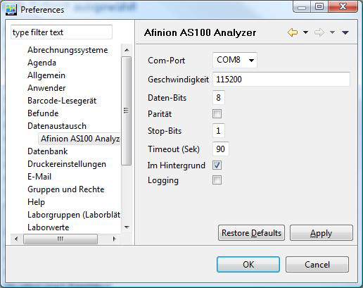
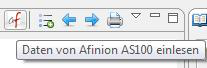
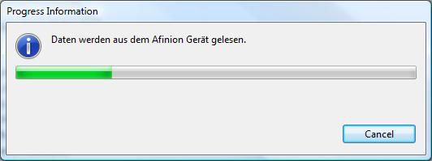
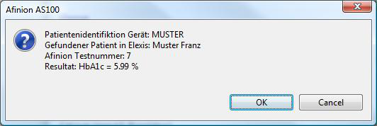

Ch.elexis.connect.afinion
image
image
image
image
Contents
- 1 Einführung
- 2 Voraussetzungen
- 3 Installation und Konfiguration
- 4 Datenübertragungskonfiguration Afinion
- 5 Afinion Funktion Patienten-ID
- 6 Elexis Konfiguration
- 7 Verwendung
- 8 Anweisungen zum Afinion
- 9 Fehlerbehandlung
- 10 Plattformen
- 11 Kabelspezifikation
- 12 Konfiguration
- 13 Einführung
- 14 Funktionen
- 15 ev andere Untertitel
Einführung
Dieses Plugin dient dazu, das Laborgerät ‘Afinion AS100 Analyzer’1 an Elexis anzubinden. Mit diesem Plugin können die, vom Afinion gemessenen Laborparameter direkt in die Elexis-Datenbank eingelesen werden.
Voraussetzungen
Dieses Plugin benötigt Elexis V1.4.1 oder höher sowie einen Afinion AS100 Analyzer Gerät. Ausserdem wird ein PC mit mindestens einer freien seriellen Schnittstelle (Alternative: USB To RS-232 Adapter) und ein korrekt gerade verdrahtetes serielles Kabel (kein Nullmodemkabel) zur Verbindung des Afinion mit dem PC benötigt.
Installation und Konfiguration
Installieren Sie auf dem, sich im Labor befindlichen PC das Plugin wie gewohnt. Verbinden Sie dann bei ausgeschalteten Geräten den Afinion mit einem seriellen Port des Computers.
Datenübertragungskonfiguration Afinion
Die serielle Datenkommunikation ist im Afinion standardmässig aktiv. Das Gerät erfordert zwingend folgende Einstellungen:
Baudrate: 115200
Daten-Bits: 8
Parität: Nein
Stop-Bits: 1
Afinion Funktion Patienten-ID
Die Funktion Patienten-ID ist auf dem Afinion Gerät standardmässig aktiviert. Mit dieser Funktion ist die Eingabe einer Patientenidentifikation bei jeder Probe auf dem Gerät zwingend. Wenn diese Funktion eingeschaltet, ist versucht Elexis den Patienten automatisch der Probe zuzuordnen. Wird die Funktion ausgeschaltet, muss in Elexis bei jeder Probe der Patient selektiert werden.
Weitere Informationen zur Funktion Patienten-ID finden Sie im Manual zum Afinion auf Seite 22.
Elexis Konfiguration
Starten Sie Elexis und gehen Sie dort zu Datei-Einstellungen-Datenaustausch- Afinion AS100 Analyzer (S. Abb. [fig:config]). Hier stellen Sie den seriellen Port und die Schnittstellenparameter ein. Die Werte müssen mit den Einstellungen auf dem Afinion Gerät übereinstimmen (siehe oben). Wichtig: Nach dem Ändern dieser Parameter müssen Sie Elexis neu starten.
Weitere Konfigurationswerte:
Timeout (Sek): Der Wert bestimmt, wie lange Elexis maximal auf Resultate warten soll, bevor die Verbindung getrennt wird.
Im Hintergrund: Damit beeinflussen Sie das Verhalten von Elexis. Bei eingeschalteter Option wird die Übertragung im Hintergrund ausgeführt und sie können weiter in Elexis arbeiten. Bei ausgeschalteter Option erscheint die Abb. [fig:connected]
Logging: Diese Option verwenden Sie bitte nur auf Anweisung des Supports, ansonsten wird Ihr Computer mit unnötigen Daten gefüllt.
[h]  [fig:config]
Verwendung
[h]  [fig:toolbarbutton] Wenn das Plugin korrekt installiert ist, erscheint in der Labor-View automatisch ein neuer Toolbar Button ‘Afinion AS100 Analyzer’ (Abb. [fig:toolbarbutton]). Ablauf:
- Probenmessung mit dem Afinion durchführen
- Messwert auf dem Afinion quittieren (allenfalls Patienten Nummer oder Namen eingeben)
- Erst dann den Toolbar Button klicken um die Verbindung mit dem Gerät herzustellen.
[h]  [fig:connected]
Wenn Sie die Probe auf dem Afinion Gerät quittiert haben, können Sie das Resultat mit einem Klick auf den Toolbar Button abholen. Wenn Elexis ein Resultat empfängt, wird versucht dieses einem Patienten zuzuordnen. In Abb. [fig:messwert] ist ersichtlich, wie der Patient zugeordnet wird (Beispiel: Muster Franz sind die Angaben aus Elexis und MUSTER wurde auf dem Afinion eingegeben). Kann der Patient nicht automatisch zugewiesen werden folgt das Fenster mit der Patientenselektion.
Wichtig:
Es werden nur Werte an Elexis übertragen, welche am aktuellen Tag gemessen wurden. Ältere Messwerte müssen Sie manuell in Elexis eingeben.
[h]  [fig:messwert]
Anweisungen zum Afinion
Damit eine automatische Zuweisung des Patienten möglich wird, muss auf dem Afinion der Patient der Messung zugeordnet werden (siehe auch ‘Afinion Funktion Patienten-ID’). Auf dem Afinion kann die Patienten-ID numerisch oder als Text (Handy-Tastatur) eingegeben werden. Sie müssen Sie zwingend eines der folgenden Eingabeformat einhalten (ohne Leerzeichen nach dem Komma!):
- PatNummer
- PatNummer,Namen
Tipp: Es kann auch nur der erste Buchstaben des Namens eingegeben werden
- Namen,Vornamen
Tipp: Namen und/oder Vornamen können auch abgekürzt eingegeben werden
Fehlerbehandlung
Wenn das Gerät nicht reagiert können die Verbindung mit Cancel gemäss Abb. [fig:connected] abbrechen. Ansonsten bleibt die Verbindung bis zum Ablauf des konfigurierten Timeouts bestehen.
Plattformen
Dieses Plugin wurde unter Windows XP und Vista getestet. Beachten Sie bitte, dass unter Linux die seriellen Ports nicht COM1 usw., sondern /dev/ttyS0 usw. heissen.
Kabelspezifikation
Es wird ein normales serielles Kabel benötigt (kein Nullmodemkabel!). Das Kabel muss vom 9-poligen Stecker (männlich) auf den 9-poligen Stecker (weiblich) 1:1 verdrahtet sein. Folgende Pins werden verwendet: 2 (Receive), 3 (Transmit), 5 (Signal GND). 1 Firma Axis-Shield
| Version: | |
| Kategorie: | |
| Beschreibung: | |
| Author: | |
| Letzte Bearbeitung: | |
| Voraussetzungen: | |
| Betriebssystem: | |
| Lizenz: |
Konfiguration
ToDo
Einführung
ToDo
Funktionen
ToDo
ev andere Untertitel
ToDo
=